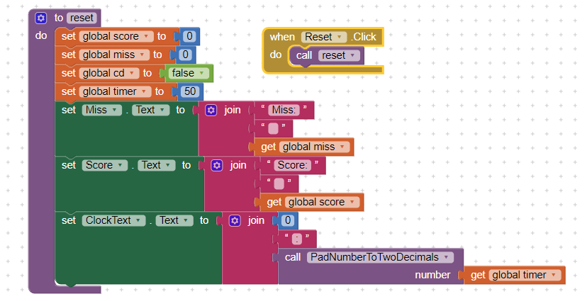
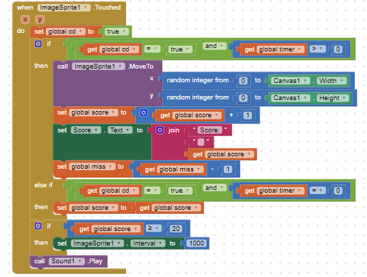
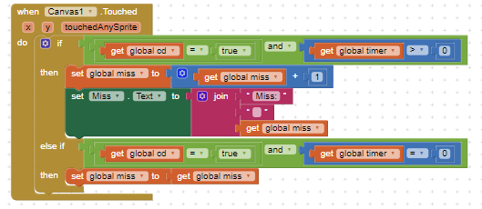
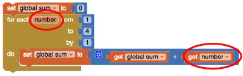
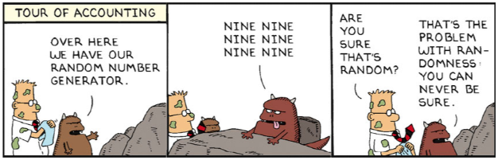

A1:Two algorithms in our code were the mouth and eyes. The mouth algorithm makes the straight line of the mouth and the eyes creates the boxes representing the eyes where it has to turn three times.
Q1:This app presents a new type of event which you haven't encountered before. What is that new event? How often is it triggered?
A1:The app presented an event called ImageSprite. It is triggered in intervals and by the coding behind it.
Q2:Consider the apps you've developed so far. Can you list all the different events your apps have responded to? What other events do you think an app can respond to? Explore some of the components in App Inventor and see what event handlers they have.
A2:All the different events my apps have responded to were timers, sound, player, buttons, and accelerometers to name a few. I think other events my app can respond to are images, text boxes, and the canvas.
Q3:What are the advantages of writing procedures in programming? Use the procedures you wrote for this app as examples in your response.
A3:The advantages of writing procedures can save space and eliminate repetitive codes while keeping the programmer looking neat. An example of a procedure would be our reset button below in the app.

Q1:Describe the purpose of each enhancement that you added to your app. Give brief descriptions of the enhancements and provide screenshots of important blocks and describe how you used them to solve certain programming problems. Include these descriptions in your write-up, below.
A1:An enhancement we added to our app was a sound being played. When the ImageSprite is touched, the sound of a plastic bag wrinkling will play. It is used as another indicator to alert
the player that they touched the ImageSprite (bag) and also acts like a little bit of distraction.

Q2:When the user touches an ImageSprite, both the Canvas.Touched and ImageSprite.Touched events are triggered. This is important for more complex games. For instance, suppose there are "good" and "bad" sprites in your game. If you hit one, you earn a point. If you hit the other, you lose two points. If you hit the Canvas and don't hit the ImageSprite, you lose 1 point. How would you code this?
A2:I would code this with a variable making an if-else statement where if ImageSprite is clicked, minus one from the variable representing the miss for the canvas, so it will be canceled out when
the ImageSprite is touched. The miss counter will have a +1 and -1, the -1 will be for the code of ImageSprite when touched, but +1 for miss counter when canvas is touched.

Q3:How do you speed up the movement of the ImageSprite? What is the fastest it could move?
A3:You can speed up the movement of the ImageSprite with an interval so the sprite's position will change locations faster. The fastest the image can move is any number that is not equal to zero.
Q1:Include a screenshot of your app's face drawing, and the code involved, showing the use of a loop and a procedure. You can take a screenshot on most Android devices by pressing the power button and the volume down button at the same time and then emailing the photo from the gallery to yourself, or uploading the image to Google Drive. To practice for the Create task, describe how two of the algorithms (procedures that you wrote) in the code combine to form a bigger algorithm (the drawFace procedure).
A1:Two algorithms in our code were the mouth and eyes. The mouth algorithm makes the straight line of the mouth and the eyes creates the boxes representing the eyes where it has to turn three times.
Q2:Can you draw a triangle with this set of Logo commands? Discuss how or why not.
A2:You cannot draw a triangle with this set of Logo commands since it only turns in 90 degree angles. A triangle cannot be created with multiple 90 degree angle turns.
Q3:Discuss: If you were designing the Logo language, how would you change some of our basic commands so that it would be easy to draw a triangle and easier to draw other shapes -- i.e., what should the basic commands do that would make drawing easier.
A3:The basic commands I would make is to have the turn command to draw at different angles or turns so we can make other shapes such as triangles. Instead of turning at only 90 degrees like right now, I want the commands to allow it to turn at 45 degrees so we can make more shapes.
Q4:What weaknesses do you find in using the procedures (the abstractions) we gave you -- forward, turn -- for drawing simple shapes? How would you change the definitions of these procedures to make it easier to draw shapes? Give a specific example that illustrates how a more powerful set of procedures would improve things.
A4:Weakness in the procedures were how it can only make simple shapes like squares and rectangles. We can change the procedures by creating a text and command for it to change angles and to be able to change how big or small the shape can be. The text can be inputted so the command will run it and therefore it will give more options to have more shapes created.
Q1:Write an if/else statement to express the following real life situation. Mary likes ice cream and always chooses chocolate unless there is no chocolate in which case she chooses strawberry. But if there’s no strawberry either then she settles for vanilla, which, for some reason, is always available.
A1:
if chocolate = true { get chocolate ice cream } else if strawberry = true { then get strawberry ice cream } else { get vanilla ice cream }
Q2:We didn’t need it for the loop in this lesson, but the number element in the For each number loop is a local variable whose value changes automatically on each iteration of the loop. For example, in this loop number would start at 1 and then go to 2, 3 and 4. And this value can be used in the body of the loop, as shown in this example. Given that, trace through this loop and figure out what value global sum would have when the loop finishes.
A2:

The value of the global sum would equal 10 when the loop is complete. It will first start by 0+1, 1+2, 3+3, and then end with 6+4 which equals 10.
Q3:App Inventor’s random-integer block is an abstract model of randomness -- i.e., an abstraction of real randomness such as flipping a real coin. What would you say about the random-integer block if you ran the coin flipping simulation 10,000 times and the result was that it came up heads 55% of the time?
A3:If it is heads 55% of the time, it would not be pure randomness since it is not a 50% to 50% comparisons for heads and tails. The 55% would be an example of pseudo randomness, not real randomness.
Q1:(POGIL) According to your results, does App Inventor's PRNG provide a good model of randomness?
A1:Yes, because the percentage of heads is approaching 50%, but is not accurate. Both percentages are very close to 50% and it shows randomness from the app due to our 20 trails of 100 flips each, 2000 flips total. It is almost a 2% difference from 50% for heads and 1.92% difference from 50% for tails, so it is near 50% with not a very big difference when looking at our data..
Q2:(POGIL) A friend claims that flipping a coin 100 times and finding that it comes up heads only 45% of the time shows that the coin is biased. How should you reply?
A2:They should do more than 10 trials to figure out the accurate percentage and determine if it is biased or not. It is truly random because every time you get a different percentage for each trial.
Q3:Because we are using a coin flip app, this experiment really tests only that App Inventor's random integer block generates a 1 around half the time. Is this a sufficient test for App Inventor's PRNG? What other experiments might you do to increase your confidence in App Inventor’s PRNG?
A3:No this is not a sufficient test for App Inventor's PRNG model since it said around half the time. It is around it, not always, so I want more trials as proof and evidence to convince me to be more confident in the App Inventor's PRNG.
Q1:Consider the following Dilbert cartoon. Would it be possible for a PRNG to spit out 6 NINEs in a row?
A1:It is possible for PRNG to spit out 6 nines in a row, but it would be very unlikely. To have six of the same values would be really hard and would need lots on experimenting.
Q2:Are slot machines fair? Why or why not?
A2:Slots machines are fair since it is true randomness and are based off of math calculations and equations. It cannot be rigged if it is truly random.
Q3: Is it possible to devise a method that would allow you to win consistently on a slot machine?
A3:It is not possible to devise a method since slot machines are random. You cannot make a method for something random if you can't even figure out a pattern. The best way is to have luck and hope for a win, there is no method, it is based off of luck and chances.
Q1:What are the main differences between Bill Nye's solar system model and the Second Life model?
A1:Bill Ney's solar system model is based on the size of the actual solar system while the Second Life model was not scaled on anything, but rather based off of how the solar system would look like with no actual size scaling.
Q2:(POGIL) What would happen if there were lots more wolves than there are bunnies? Would the wolves live forever? Record your hypothesis, prediction and experiment results.
A2:If there are more wolves than bunnies, they will run out of food and die,they will not live forever. In the experiment, the wolves ate all the rabbits and overpopulated which led to their deaths.
Q3:(POGIL) This model chose to include certain features and exclude other features. For example, this simulation only includes rabbits, wolves, and grass but there are other predators of rabbits and other food sources for rabbits. Why do you think the creators focused on these data elements and not others? How might this introduce bias (concentration on or interest in a particular area) into the simulation?
A3:The creators primarily focused on the predator and prey relationship between the rabbits and wolves to distinguish between RNG and PRNG, whereas factors such as other animals may interfere with the stimulator.
Q1:Which generation of the 4-bit simulators above is the most abstract? Why?
A1:The second generation would be the most abstract since the it has a language that replaces numbers with symbolic names for instructions and data.
Q2:Explain the purpose or function of the RAM and the CPU.
A2:The function of RAM is to temporarily store the computer's data and programs when it is running, but when it is off, everything on the RAM will go away. The function of a CPU is to carry out the instructions and data of computer programs.
Q3:Describe in your own words the difference between the fetch and execute steps.
A3:Fetch step is to gather the instructions and the execute step is running the instructions from the fetch step.
Q4:Summarize the differences between assembly language and machine language programming.
A4:Assembly language does not use binary sequences but instead symbolic names, while machine language programming uses binary which consists of the numbers 0 and 1.
Q1:Is it possible to identify someone, perhaps a patient, knowing just the gender, birth date, and zip code? Why or why not?
A1:It is possible to identify someone with those factors since it can easily single people out with all that sensitive and private information. It takes data and a specific location, with all this info, it can narrow down to someone easily.
Q2:Are electronic documents like paper documents? Write 2-3 sentences comparing and contrasting them.
A2:Electronic documents are very similar to paper documents. They are similar because they are still documents and still show the same information. Electronic is represented virtually and electronically, which means it can be accessed on the web, while paper document is actually physical so it is only available at certain locations of where the document is.
Q3:Earlier in the course, you built the Map Tour app. In the final version, what kind of data is collected from the user? Does the user know the data is being collected? Can they opt out of providing data and still use the app?
A3:The data collected from the user is their location. The user will know that their data is being collected because when they install the app, it will ask for it to allow or not. The user will be able to opt out and still use the app, it just won't take their currently location, but they can still look around and search locations.
Q4:Is the Privacy Act effective? Explain why or why not.
A4:The Privacy Act is not very effective because it offers very little protection for the sensitive information people gives out. It is also controlled by government and not truly by the companies sometimes, so it will be hard to retrieve back.
Q5:Are you willing to trade some of your privacy for the convenience of having a computer or a company recommend products to you? Why or why not? Under what circumstances?
A5:Yes, I am willing to trade some of my privacy to have a computer or to have a company recommend products. Without a computer or some advertisement, you won't be able to explore and move on in life since everything is revolved around technology now. I will only trade some of my privacy if it will not be used to expose me or can be used to access into my personal life.
Q6:How do we leave digital "footprints and fingerprints?" Do you think this is important for everyone to know? Why or why not?
A6:We leave digital footprints and fingerprints from our daily searches and access to websites from our phone, computer, and laptops. I think this is important for everyone to know what is going on and how they leave digital footprints on whatever they do and search on the Internet. People should know this because information is sensitive and is their privacy, they should know where it is going and how it happens.
Q7:How have social media platforms such as Twitter, Instagram, Snapchat, etc. affected our privacy?
A7:Social media platforms affected our privacy by allowing people to share and literally record their whole lives to the Internet and the world. It literally removes privacy and offers transparency to their lives causing privacy to look worthless because of their action. It gives a whole new view of privacy and how some people do not really care about privacy and would love to publicize their lives to others.
Q8:In this course, you are building apps that collect data from users, the device, and its sensors. What responsibilities do we have as app developers for the data we collect?
A8:As app developers, the user's information should be secured and should not be accessed by any outside sources. Their information should be private and should be respected since it is theirs.
Q9:Search the web for a recent news story that deals with privacy. LINK to the article and then write a paragraph summarizing the article, including any beneficial or harmful impacts on privacy.
A9:
Americans and Privacy: Concerned, Confused and Feeling Lack of Control Over Their Personal Information
The article is explaining how many Americans feels like the have very small control of their personal information from the government and companies in the world today. Many thinks it is basically impossible to go through
life without being tracked in life now. They always feel like they are being monitored by companies and the government. 81% of U.S. adults believes they lack control over their data from companies and 84% says the same
for the government. This is a big problem in trust from the people of the nation, they do not feel safe and feel powerless. Americans also believes they "personally benefit very little or none from company data collection
about them". They do not think their information is helping them, but instead is quite the opposite of the effect. Americans are also concerned of how their data is being used, they see it as more negative and seems very
uncomfortable with their data being used. Overall, Americans are scared and concerned for their personal information since they lack control, feel like it is being misused, and much more by the government and the
companies today.